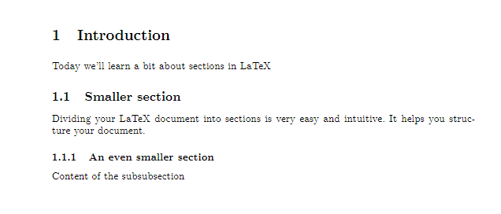
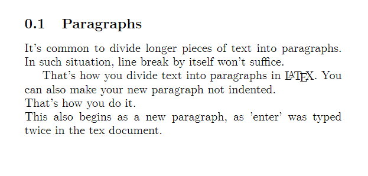
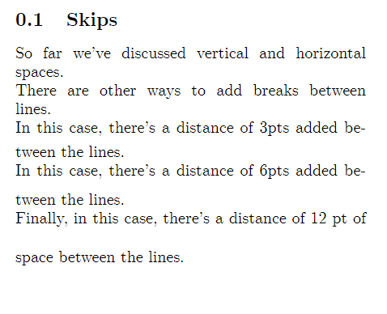
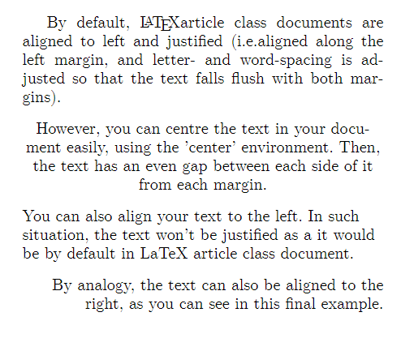

6 Formatting Your Document
6.1 Sections and Subsections

\documentclass{article}
\begin{document}
\section{Introduction} Today we'll learn a bit about sections in LaTeX
\subsection{Smaller section} Dividing your LaTeX document into sections is very easy
and intuitive. It helps you structure your document.
\subsubsection{An even smaller section} Content of the subsubsection
\end{document}To structure your document, particularly when it’s a longer piece of work, it is often very useful to divide it into sections and subsections. LaTeX makes it quite easy and intuitive and automatically numbers your sections, so you can list them in the table of contents with one simple tag later. To create a new section simply add the \section{} tag and insert the title of your section between the curly braces. You can further structure your document into subsections or even subsubsections, as shown in the example above. LaTeX enumerates your sections by default in the order you entered them. This enumeration is useful when you create a table of contents. However, if you don’t want your section to have a number in front of it, simply add an asterisk between the tag and the curly braces, for example \section*{}. This also applies to subsections and subsubsections, as well as any LaTeX environments with default enumeration.
6.2 Paragraphs, line breaks and spaces
As opposed to Word or Pages, LaTeX is not a What You See Is What You Get (WYSIWYG) editing tool. It means that, as you already might have noticed, the document you see in your editor doesn’t exactly resemble the final compiled pdf document you create. This can be a bit confusing for a new user, especially when it comes to dealing with basic text structures, such as line breaks, page breaks or paragraphs. In this section, you’ll learn that those things are very simple to do in LaTeX as well.
6.3 Line breaks and page breaks

\section{Paragraphs, line breaks and spaces}
\subsection{Line breaks}
This is a sentence about something.
The second sentence is not in a new line, even though it appears to be so in the TeX editor. \\
However, this way we can get a new line in LaTeX Using markup tag 'newline' is also equivalent. \newline
Moreover, you don't need to even to use an enter on your keyboard \\ to start a new line. Although \\ it definitely makes your document structure easier to understand without compiling.
\subsection{Page breaks}
\clearpage
\subsection{Paragraphs}Line breaks
When writing a TeX document, pressing ‘enter’ on your keyboard will not simply begin a new line in the complied document, even though it might look like it in your TeX editor window. You always need to press “enter” twice to produce a new line in the output document. Alternatively, you can use ‘\\’ as the notation for starting a new line – you can enter it wherever you want in your tex file, and everything written after that will be put in a new line (even if you don’t actually use “enter” at all – however, this usually means making your ‘raw’ Tex document less understandable for yourself).
Page breaks
The tex file differs fundamentally from the document structure as its content is not divided into pages – instead, the file gets longer the more pages you add. In the compiled (i.e. final pdf) document, as soon as the volume of the content you set is larger than the space available within the current page, LaTeX starts a new page. However, often you might find yourself in a situation in which you want to start a new page before the text exceeds the capacity of the current one – a situation in which you would normally use the ‘page break’ button. In LaTeX that’s simply done by using a markup tag - \newpage or \clearpage. For the purpose of the introduction, you can consider them as equivalent, although they differ subtly in their treatment of objects such as tables or figures, which will be discussed later.
6.4 Paragraphs
In addition to line and page breaks, it’s useful to know how to start a new intended paragraph. In LaTeX that can be done simply by puttingat the end of the current paragraph. Everything set after that tag will begin from a new line with indentation. If you want to avoid that indentation, simply add \noindent before beginning your new paragraph.

\subsection{Paragraphs}
It's common to divide longer pieces of text into paragraphs. In such situation, line break by itself won't suffice. \par
That's how you divide text into paragraphs in LaTeX. You can also make your new paragraph not indented. \par
\noindent That's how you do it. \\
This also begins as a new paragraph, as 'enter' was typed twice in the tex document.6.5 Spaces
If you want to add larger spaces in your text, either horizontally or vertically, LaTeX comes with some special commands. These generally do not seem to work in the online platform, so if you want to play around with these, please use TexStudio on your own computer.
For horizontal spaces, instead of pressing your space bar repeatedly (hint: it wouldn’t work in LaTeX). You can use the markup tag \hspace{}, specifying the size of the space you want to insert in the curly braces. This can be done in metric units (e.g. \hspace{2cm} or \hspace{20mm}), points (e.g. \hspace{5pt}) or inches (e.g. \hspace{1in}), amongst others.
If you want a part of your sentence to begin from the right margin (for example when putting a name on the left side and date on the right side in the same line at the end of a letter), you can use the markup tag \hfill. Everything after that will be aligned to the right margin.
Note that you cannot begin your line with \hfill to align your sentence to the right. That can be done using \flushright environment and is discussed in the next section on the text alignment.
\subsection{Spaces}
\subsubsection{Horizontal}
%hspace:
This sentence has a \hspace{3cm} large space in it.\\
%hfill:
From this point \hfill this sentence starts from the other margin.
\subsubsection{Vertical}
%vspace
That's is an example sentence about something.
\vspace{3cm} \\
There's a considerable distance between this sentence and the previous sentence.
%vfill
\vfill
\noindent This sentence, on the other hand, starts at the bottom margin of the page. When you write, it will gradually "grow" towards the last sentence before the vertical fill.The analogous markup tags are can be used for vertical spaces: \vspace{} allows you to specify the distance between the current and next line in the curly braces, and \vfill moves everything written after it to the bottom of the page.
6.6 Skips
Finally, you can add horizontal gaps without specifying the distance, by using “skip” markup tags. There are three variants available: \smallskip, \medskip and \bigskip, each associated with a different size of vertical space between lines. You can see how to use them in the example below.

\subsection{Skips}
So far we've discussed vertical and horizontal spaces.\\
There are other ways to add breaks between lines.\\
\smallskip
In this case, there's a distance of 3pts added between the lines. \\
\medskip
In this case, there's a distance of 6pts added between the lines. \\
\bigskip
Finally, in this case, there's a distance of 12 pt of space between the lines.\\6.7 Text Alignment
By default, LaTeX article class documents are aligned to left and justified (this means aligned along the left margin, and letter- and word-spacing is adjusted so that the text falls flush with both margins).
However, you can centre the text in your document easily, using the ‘centre’ environment.

By default, LaTeX article class documents are aligned to left and justified (i.e.aligned along the left margin, and letter- and word-spacing is adjusted so that the text falls flush with both margins).
\begin{center}
However, you can centre the text in your document easily, using the 'center' environment. Then, the text has an even gap between each side of it from each margin.\end{center}
\begin{flushleft}
You can also align your text to the left. In such situation, the text won't be justified as a it would be by default in LaTeX article class document. \end{flushleft}
\begin{flushright}
By analogy, the text can also be aligned to the right, as you can see in this final example.\end{flushright}Similarly to text editors you might be used to, LaTeX also allows you to flush the text left, so it is not aligned to both sides, but only to the left (a default setting in Microsoft Word) or flush it right, so it’s only aligned to the right.